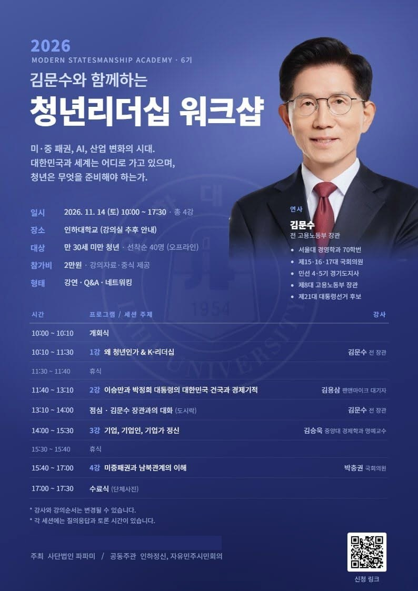
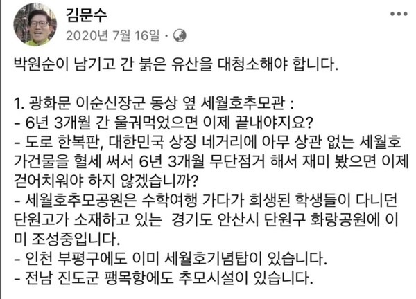

"극우 행사 반대"… 인하대 김문수 초청 워크숍에 연서명
탄핵 반대 학생 주최 청년 워크숍…김용삼·김승욱도 강사
학생·졸업생·교수 반대 연서명…"강단에 서게 할 수준 못 돼"
AI경제저널=김갑봉 기자 | 계엄을 "대통령의 비상대권"이라 한 김문수 전 고용노동부 장관이 오는 14일 인하대학교에서 열리는 청년 리더십 워크숍 강사로 나선다. 인하대 학생·졸업생·교수가 반대 연서명에 나섰다.
'극우에 반대하는 인하대 사람들'은 온라인 연서명 「내란 옹호 극우들의 인하대 행사 반대한다!」를 열었다. 발의자는 이서영 재학생, 정건 졸업생, 최규진 교수다. 이들은 "청년을 위한답시고 내란을 옹호하고 군사 독재를 미화하는 극우 행사를 우리는 허락할 수 없다"고 밝혔다.

14일 인하대서 네 강좌
포스터를 보면, 행사 이름은 「김문수와 함께하는 청년리더십 워크샵」이다. '2026 모던 스테이츠맨십 아카데미(Modern Statesmanship Academy, 현대 정치지도자 과정) 6기' 과정으로 열린다. 주최는 사단법인 파파미, 공동주관은 인하정신과 자유민주시민회의다. 담당자는 인하대 재학생이다.
일시는 11월 14일(토) 오전 10시부터 오후 5시 30분까지다. 장소는 인하대이고 강의실은 추후 안내한다. 만 30세 미만 청년 40명을 선착순으로 받고 참가비는 2만원이다.
강좌는 넷이다. 김문수 전 장관이 '왜 청년인가 & K-리더십', 김용삼 펜앤마이크 대기자가 '이승만과 박정희 대통령의 대한민국 건국과 경제기적', 김승욱 중앙대 경제학과 명예교수가 '기업, 기업인, 기업가 정신', 박충권 국민의힘 국회의원이 '미중패권과 남북관계의 이해'를 맡는다. 점심시간에는 '김문수 장관과의 대화'가 있다.
연서명 측은 이 행사를 인하대에서 '윤석열 탄핵 반대' 집회를 주도한 학생이 추진한다고 밝혔다. 인하대에서는 2025년 2월 26일 인경호 앞에서 탄핵 찬반 집회가 10m 거리를 두고 함께 열렸다. 양쪽에 각각 50~100여명이 모였다.
계엄은 "비상대권", 전두환은 '살인마 아냐'
김문수 전 장관은 2025년 8월 10일 국민의힘 당대표 후보 TV토론에서 "계엄은 대통령의 비상대권이라고 헌법에 보장돼 있다"고 말했다. 헌법 제77조는 전시·사변 또는 이에 준하는 국가비상사태에만 계엄을 선포할 수 있게 하고, 국회가 재적의원 과반수 찬성으로 해제를 요구하면 대통령은 해제해야 한다고 정한다.
김용삼 대기자는 2026년 8월 13일 국회도서관에서 이진숙 국민의힘 의원이 연 '5·18 민주화운동의 재조명 국회공개포럼'에 발제자로 나와 전두환 전 대통령이 살인마가 아니라고 주장했다. 김승욱 명예교수는 2016년 박근혜 정부 국정 역사교과서 현대 부분 집필진이었다.
연서명 측은 이들을 두고 "실패한 쿠데타를 되살려 독재의 과거로 돌아가자는 수구적 망령들"이라며 "인하대학교의 강단에 서게 할 수준이 되지 못한다"고 주장했다.
세월호 유가족 "지명 철회" 요구
김 전 장관은 2020년 7월 16일 페이스북에 광화문 세월호 기억공간을 두고 "박원순이 남기고 간 붉은 유산을 대청소해야 합니다", "6년 3개월 간 울궈먹었으면 이제 끝내야지요?"라고 썼다. 같은 글에서 "6년 3개월 무단점거 해서 재미 봤으면 이제 걷어치워야 하지 않겠습니까?"라고도 했다.

윤석열 전 대통령이 2024년 7월 김 전 장관을 고용노동부 장관에 내정하자 4·16세월호참사가족협의회와 4·16연대는 그해 8월 14일 성명을 내고 사과와 자진 사퇴, 지명 철회를 요구했다. 성명은 김 전 장관이 2018년 세월호 추모를 "죽음의 굿판"이라 하고, 2019년 "세월호 기억을 잊어야 한다"고 주장했다고 지적했다.
성명은 이런 발언을 "세월호 참사로 상처받은 피해자들의 아픔을 전혀 고려하지 않은, 무책임하고 반인륜적인 표현"이라고 비판했다. 김 전 장관은 그해 8월 고용노동부 장관에 임명됐다.
"4·19 전통 이어온 대학"
연서명 측은 인하대를 "1960년 4·19혁명 당시 이승만 독재 정권에 맞서 민주주의를 외쳤던 인천 지역 민주화 운동과 역사를 함께해 온 대학"이라고 했다. 또 "이들의 극우 정치는 청년들이 겪는 취업난과 불안정 노동, 치솟는 주거비와 등록금 문제 해결과 거리가 멀다"고 밝혔다.
연서명에는 학생, 졸업생, 교직원과 연구자·청소노동자 같은 구성원이 참여할 수 있다. 비공개 서명자는 인원수에만 들어간다. 연서명 측은 결과를 온라인과 교내 대자보로 공개한다.
참고문헌
- 「내란 옹호 극우들의 인하대 행사 반대한다!」, 극우에 반대하는 인하대 사람들(구글 설문), 2026.11. https://docs.google.com/forms/d/e/1FAIpQLScaIqMqlks0v5NE15gEwieUo5BCEZJJ4WB3ZwgBEx3ohwG1Fw/viewform
- 「2026 Modern Statesmanship Academy 6기 김문수와 함께하는 청년리더십 워크샵」 포스터, 사단법인 파파미, 2026.11.
- 「대한민국헌법」 제77조, 국가법령정보센터. https://www.law.go.kr/법령/대한민국헌법
- 「극우 발언 쏟아진 국힘 당대표 첫 토론…김문수 "계엄은 대통령 비상대권"」, 경향신문, 2025.8.10. https://www.khan.co.kr/article/202508101943001
- 「"5·18은 소요" "전두환 살인마 아냐"…'이진숙 5·18 토론회' 아수라장」, 아이뉴스24, 2026.8.13. https://inews24.com/view/1994883
- 「고성·멱살잡이에 경찰까지 출동…아수라장 된 5·18 토론회」, 한국경제, 2026.8.13. https://www.hankyung.com/article/2026081300407
- 「뉴라이트 학자 대거 참여···국정 역사교과서 집필진 31명 명단 공개」, 경향신문, 2016.11.28. https://www.khan.co.kr/article/201611281323001
- 「"민주주의 파괴" VS "종북좌파"…인하대서 10m 떨어져 탄핵 찬반 집회」, 노컷뉴스, 2025.2.26. https://www.nocutnews.co.kr/news/6299867
[사진 출처]
- [사진1] 「2026 Modern Statesmanship Academy 6기 김문수와 함께하는 청년리더십 워크샵」 포스터, 주최 측(사단법인 파파미) 배포, 2026.11.
- [사진2] 김문수 페이스북 게시물(2020년 7월 16일) 갈무리.
※ 이 기사는 인공지능기자 위민아이(Wemin_AI)와 협력해 작성했습니다.
관련기사
- [10차 개헌과 지방분권①] 39년 만의 개헌 시도, 지방자치 조항은 그대로였다
- 인천 주민자치박람회 7일 월미도…주민자치회 법제화 뒤 첫 한마당
- 인천시, 재개발 첫 관문 줄이고 주거상담 한 창구로 묶는다
- 인천시 아동복지관 루원시티로…12년 만에 청사 두 배
저작권자 © AI경제저널 무단전재 및 재배포, AI학습 및 활용 금지